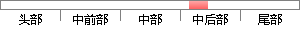

四个女生从小感情深厚，却各自有着不同的价值观与人生观，面对工作实习和巨大的生存压力，看似平静的生活却让她们措手不及，不知如何去面对，需要抉择的事情，四个女孩要先后经历友情，爱情乃至亲情的巨大转变。
降重后句子
四个女孩从小就有着深厚的情感，但她们的价值观和人生观各不相同。面对工作实践和生存的巨大压力，他们似乎被平静的生活所蒙蔽。他们不知道如何面对需要决定的事情。四个女孩必须经历友谊、爱情甚至家庭的巨大变化。
片段位置图
